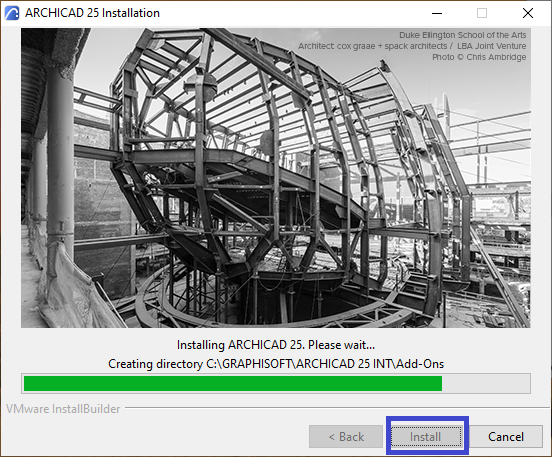
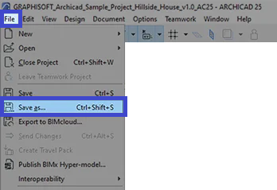
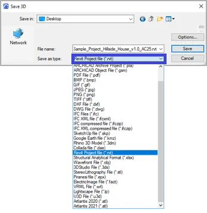
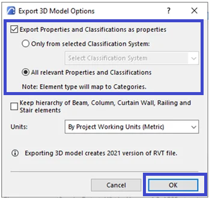
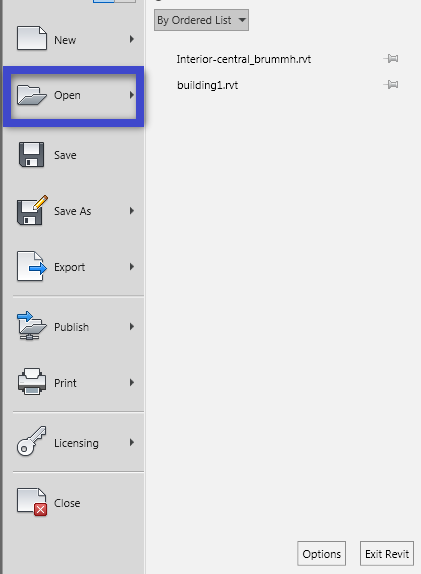

If you want to export your model from ArchiCAD to Revit because you’re considering switching to Revit, you’re in luck. By updating your software to the latest version, you’ll have the ability to export a Revit file (RVT). In this article, we will give a step-by-step guide that will help you export your model from ArchiCAD to Revit.
Why Architects want to Export From ArchiCAD to Revit
There are a few reasons why someone might want to export from ArchiCAD to Revit:
- The user is more familiar with Revit and prefers to work with that software in place of ArchiCAD.
- The user is collaborating with a team that primarily uses Revit and needs to be able to share files in a compatible format.
- Exporting from ArchiCAD to Revit allows the user to take advantage of the specific features and tools that Revit offers.
- Exporting from ArchiCAD to Revit allows the user to compare the results of their work in both software programs, which can be helpful for evaluating the strengths and weaknesses of each.
Steps of Exporting a model From ArchiCAD to Revit
If you’re using ArchiCAD and want to export a project as a Revit file (RVT), you can use the native Save As feature to do so. And here’s how:
- Install the latest version of ArchiCAD:
- Download and install ArchiCAD 25 or a newer version.
- You can find a guide for installation online via this Link.

- Save the project as an RVT file:
- Go to File > Save As.
- In the Save 3D window, select Revit as the type and click Save.
- You’ll have the opportunity to exclude classification systems and change units before finalizing the save.
- To open the model file, you’ll need to use Revit 2021 or a more recent version.



- Open the project file in Revit
- To import an ArchiCAD file into Revit, you can follow these steps:
- Open the RVT file in Revit: You can do this by going to File > Open and selecting the RVT file you want to import.
- Continue opening the file: When the Open – Foreign File window appears, click the “Continue opening the file” button to proceed. This will import the file into Revit and allow you to view and work with it within the software.
- To import an ArchiCAD file into Revit, you can follow these steps:

Recommendation
- For Revit projects, it is generally best to export only the base model, which includes surfaces such as walls, floors, and ceilings. RFA families should be used for several elements and categories in Revit like decorative objects.
- It may be necessary to convert individual families separately due to their importance in the project, or it may be more efficient to convert the entire model as a layer combination. Note that in either case, the resulting file will not be editable.
Compare ArchiCAD to Revit
Here below is a table comparing some of the differences between ArchiCAD and Revit :
| Feature | ArchiCAD | Revit |
|---|---|---|
| Target audience | Architects | Building designers and engineers |
| Key strengths | Intuitive interface, strong 3D modeling support | Comprehensive building design and analysis tools |
| Developer | Graphisoft | Autodesk |
| Available platforms | Windows, macOS | Windows, macOS, iOS, web-based versions |
| User base | Smaller | Larger, more widely used in AEC industries |
| File format | PLA, PLN | RVT |
| Pricing model | Subscription | Perpetual license or rental (monthly or annual) |
Tutorial video Export Archicad to Revit
Conclusion
Note that the level of detail and the level of compatibility of the exported file will depend on the export settings you choose in ArchiCAD and the import options you select in Revit. It may be necessary to do some additional work in Revit to get the imported file to look and function as desired.